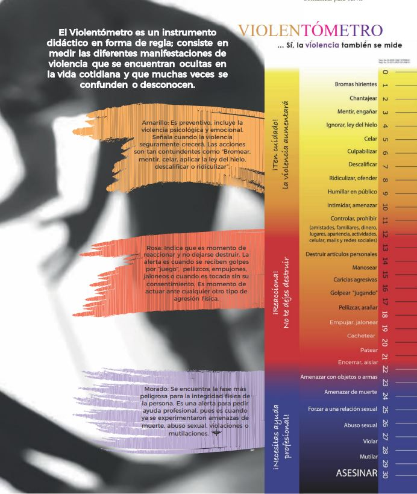

En la materia de Historia, la asignatura de Historia, se ha analizado el desarrollo y evolución del violenomentómetro a lo largo del tiempo, así como las diversas necesidades que han impulsado su transformación. Comprender estos avances nos permite apreciar su impacto en distintos contextos y la manera en que ha respondido a desafíos históricos y sociales. En esta introducción, exploraremos cómo su evolución ha estado determinada por factores clave y qué papel ha desempeñado en diferentes épocas.
Tabla comparativa
| Primero 2009 | Actual 2025 |  |  |